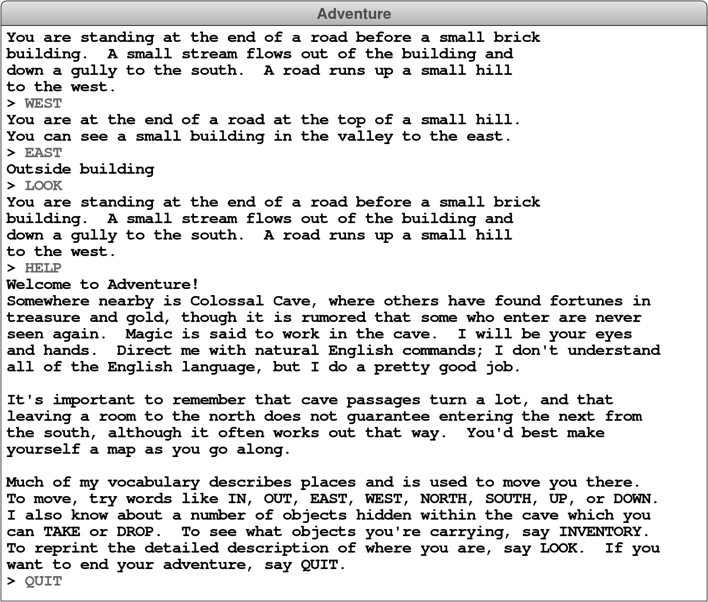

MS 2: Action Verbs: QUIT, HELP, and LOOK
Most of the commands entered by the player are words like WEST or EAST that indicate a passage to another room. Collectively, these words are called motion verbs. Motion verbs, however, are not the only possible commands. The Adventure game allows the player to enter various build-in commands called action verbs. The six action verbs you are required to implement (although you only need to implement QUIT, HELP, and LOOK as part of Milestone 2) are described in Table 1.
| Action Verb | Description |
|---|---|
QUIT |
This command signals the end of the game. Your program should call the build-in function quit to exit from the program. This will abort any running Python program. |
HELP |
This command should print instructions for the game on the console. You need not duplicate the instructions from the starter file exactly, but you should certainly give the users an idea of how your game is played. If you make any extensions, you should describe them in the output of your HELP command so that I can easily see what exciting things I should look for! |
LOOK |
This command should type the complete description of the room and its contents, even if the user has already visited the room. |
INVENTORY |
This command should list what objects the user is holding. If the user is holding no objects, your program should say so with a message along the lines of “You are empty-handed.” |
TAKE item |
This command requires a direct item and has the effect of taking the item out of the room and adding it to the set of items the user is carrying. You need to check to make sure that the item is actually in the room before you let the user take it. |
DROP item |
This command requires a direct item and has the effect of removing the item from the set of items the user is carrying and adding it back to the collection of items in the room. You need to check to make sure that the user is carrying the item. |
The first thing you need to do to implement this milestone is to subdivide the user’s input into individual words. This is a process that the tokenscanner module makes easy, but you can do it manually if you really want. Once you have done so, you need to look at the first word to see if it is one of the action verbs before checking whether it is a motion verb. You then need to implement the first three action verbs. The QUIT command stops the program from reading any more user commands, just as a new room with the name "EXIT" does in the code you adapted from the teaching machine. The HELP command prints the contents of the HELP_TEXT constant out to the console, and should not print the room description again immediately after. The LOOK command results in the long description of the current room being printed again.
Once you have finished this milestone, your program should be able to produce the following sample run: 